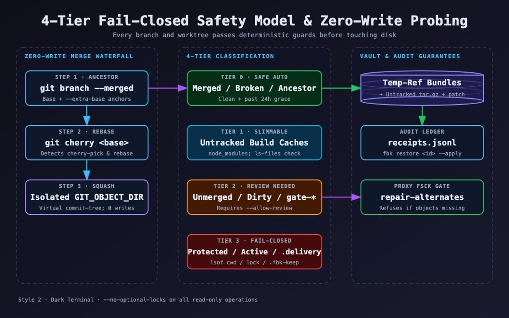
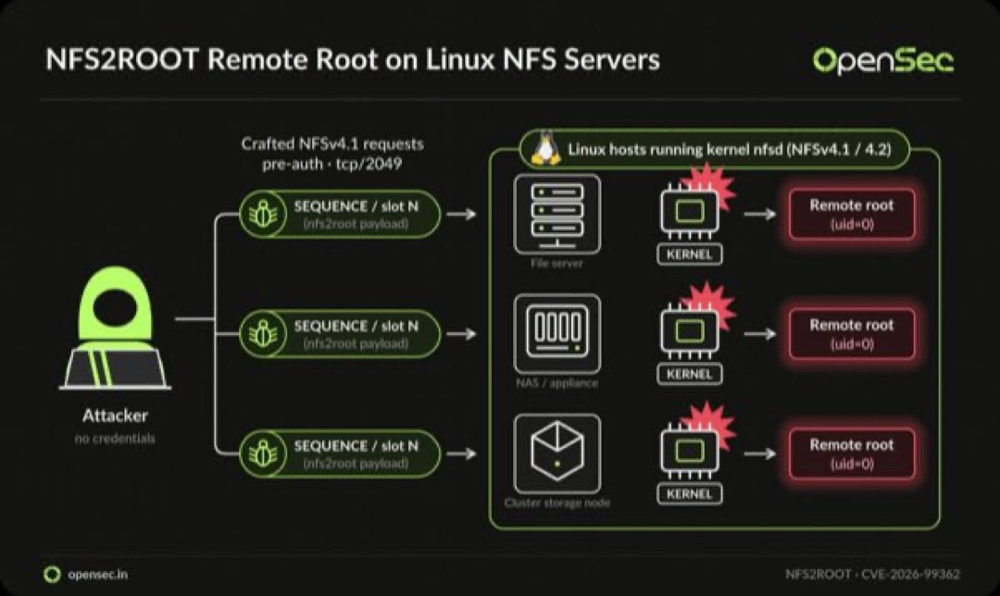
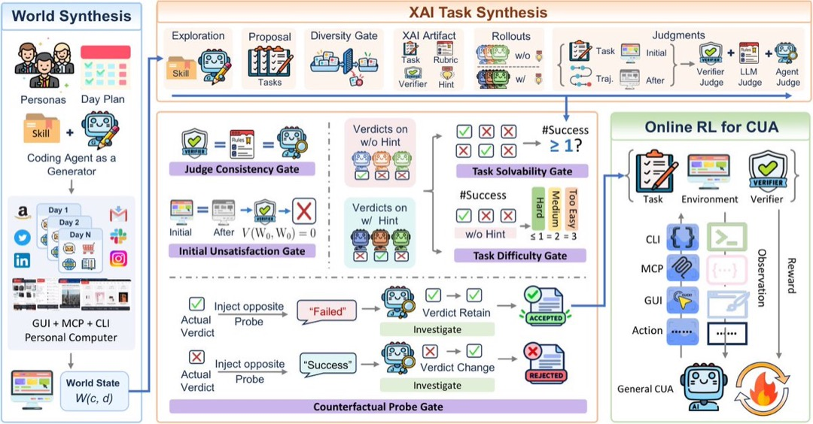
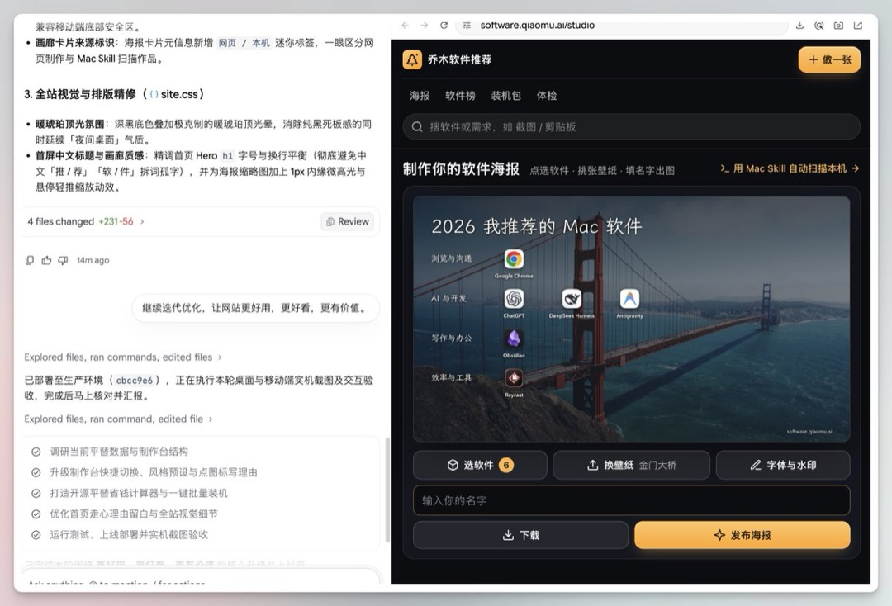
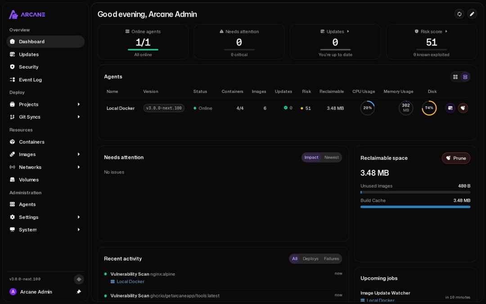
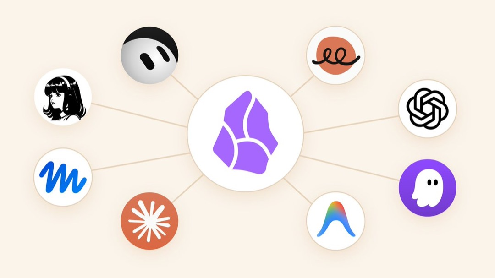

本期速览
01 fbk 用确定性引擎清理 Git Worktree
02 Antigravity 优化 Gemini Neon 缓存命中
03 Linux NFS 服务器曝 12 年 root 漏洞
05 WildAWM 合成计算机代理训练环境
09 Obsidian 推出全平台官方连接器
01｜fbk 用确定性引擎清理 Git Worktree
来源（X） · @teach_fireworks · 2026-11-27 00:22
经过了大量的实践和验证，可以拯救在AI Coding时产生的大量worktree,分支自己磁盘空间暴涨。
fireworks-branch-killer
https://github.com/yizhiyanhua-ai/fireworks-branch-killer
为什么需要（AI Coding 的真实痛点）？
多 Agent 并行写代码爽一时，几周后打开工作目录往往已是灾难现场：
Worktree 爆炸与十数 GB 磁盘重复占用：
Claude Code、Codex、AGY、T3 Code、Orca 每次并行任务都新建一个 worktree，随之重复拷贝 node_modules、.next、target、dist、.venv，动辄吞掉几十 GB 磁盘空间。
Squash / Rebase Merge 幽灵分支盲区：
常规 git branch --merged 根本识别不了 GitHub Squash Merge 或 Cherry-pick Rebase，导致早已合入主干的分支积压到上千条。
本地 refs/remotes 雪崩与套娃克隆：
Agent 互相添加本地路径或 /tmp 作为 remote，导致单仓涌现 10 万+ 条 refs/remotes、失效 .git/objects/info/alternates 以及层层套娃的临时克隆。
不敢手动 rm -rf / git branch -D：
让大模型临场拼命令批量清理，极易误杀正在干活的另一路 Agent、丢掉尚未推送的本地提交或未跟踪新文件。
设计理念
fireworks-branch-killer（fbk）坚持「AI 负责判断时机，确定性引擎负责安全执行」：
确定性脚本取代模型猜命令：
所有扫描与清理一律通过零依赖 Python 引擎 scripts/fbk.py 执行，不让 LLM 临场拼接高危删除命令。
默认 Dry-Run + Fail-Closed 硬保护：
一切变更操作必须显式传 --apply 才动盘；遇到 git status 报错或 lsof 进程检查不可用时，批量清理直接拒执行（Fail-Closed）。
零写入只读探测：
全部只读命令自动携带 --no-optional-locks；三步合并瀑布中的虚拟 Squash 探测运行在临时隔离 GIT_OBJECT_DIRECTORY 中，对真实仓库 .git/objects/ 零写入。
加固型恢复保险丝（Recovery Vault）：
凡删除非祖先合并分支、未合入 detached HEAD 或脏工作树，必先备份完整 .bundle（经临时 ref）、git diff 补丁及未跟踪文件 .tar.gz，并写入只追加 receipts.jsonl 收据，随时一键 restore。
事前防复发 + 用完即焚：
SessionStart 超阈轻量提醒、PreToolUse 拦截本地//tmp git remote add 与超配额建工作树、fbk close 在每次任务合入后即刻收尾。
fireworks-brach-killer（fbk） 零依赖、确定性、Fail-Closed 的 Git Worktree 与 Feature 分支治理引擎，原生兼容 Claude Code、Codex、Antigravity (AGY)、DeepSeek Harness、Amy、T3 Code 与 Orca。

02｜Antigravity 优化 Gemini Neon 缓存命中
来源（X） · @yibie · 2026-11-26 20:52
过去几天，Gemini 团队一直在优化 Agy 的缓存命中率，还有一些底层方面的优化，虽然额度没变，但 Neon 用量涨了接近 75%。
Agy v2.35 的优化也很直给：Neon 每个任务消耗比之前少 12%，执行速度快 17%。
独立开发者 Pawel Huryn 拿 105 个 bug 测试题重测了一遍，xhigh 档便宜了 39%，$34 干了原来 $57 的活。
https://www.testingcatalog.com/google-stretches-antigravity-neon-quota-with-caching-gains/
03｜Linux NFS 服务器曝 12 年 root 漏洞
来源（X） · @sysxplore · 2026-11-26 12:26
中文译文
🚨 任何能访问 Linux NFS 服务器的人都能在其上获得 root 权限。无需密码，无需登录。这个漏洞在内核中潜伏了 12 年。
它被称为 NFS2ROOT。只需一次连接到 2049 端口就足够了。
已在 Linux 6.12.117、6.18.61、7.3.2 和 7.4-rc1 中修复。请更新并重启，或者在能够更新之前用防火墙封锁该端口。
原文
🚨 Anyone who can reach a Linux NFS server can get root on it. No password, no login. The bug sat in the kernel for 12 years.
It's called NFS2ROOT. One connection to port 2049 is enough.
Fixed in Linux 6.12.117, 6.18.61, 7.3.2 and 7.4-rc1. Update and reboot, or firewall the port until you can.

04｜Linux Mint 27 恢复休眠模式
来源（X） · @sysxplore · 2026-11-26 12:38
中文译文
Linux Mint 正在恢复休眠功能，也就是 Ubuntu 悄悄放弃的睡眠模式。
Linux Mint 27 beta 现已发布，新增了睡眠模式页面，可为你自动配置休眠，还支持混合睡眠和挂起后休眠。
来自 Mint 自己的说明：“Ubuntu 实际上决定将其从可用的睡眠模式中移除，所以它在 Linux Mint 中通常不可用。我们正在将其恢复。”
Cinnamon 6.8 新增了一对一触控板手势以及 Nemo 文件管理器中的预览窗格。新应用包括 Superlight 系统监视器。
该 beta 提供 Cinnamon、Xfce 和 MATE 版本，基于 Ubuntu 26.04 LTS 构建。仅供测试使用。
原文
Linux Mint is bringing back hibernation, the sleep mode Ubuntu quietly dropped.
The Linux Mint 27 beta is out now, with a new Sleep Modes page that sets up hibernation for you, plus hybrid sleep and suspend-then-hibernate.
From Mint's own notes: "Ubuntu actually decided to remove it from the available sleep modes, so it was usually not available in Linux Mint. We're bringing it back."
Cinnamon 6.8 adds one-to-one trackpad gestures and a preview pane in the Nemo file manager. New apps include the Superlight system monitor.
The beta comes in Cinnamon, Xfce and MATE editions, built on Ubuntu 26.04 LTS. It's for testing only.
05｜WildAWM 合成计算机代理训练环境
来源（X） · @jiqizhixin · 2026-11-26 20:36
中文译文
计算机使用训练需要交互式环境，其任务可解，且其验证器能够检测成功。
UNC-Chapel Hill、Microsoft Research 及合作研究人员在一篇 arXiv 预印本中介绍了 WildAWM。
1. WildAWM 合成可执行环境，同时支持图形界面、MCP 服务和命令行访问。开源模型构建环境和任务。质量门控使用智能体 rollout、评判者之间的一致性以及反事实探针来检查任务是否有效，以及其验证器是否对变化的结果做出适当响应。
2. 该流水线产出 341 个长时程环境-任务对，其中一些需要超过 100 个动作。该研究评估生成的环境能否提供有用、可控的训练交互。
3. 这些是合成的工作空间，具有自己的执行和验证规则。任务完成情况和验证器可靠性需要分别检查，论文的检查将两者都作为环境构建流水线的一部分来处理。
Agent World Model in the Wild: Computer-Use Agent Environment Synthesis
论文：https://arxiv.org/abs/2610.26828v1
代码：https://github.com/MSR-Orchard/WildAWM
我们的报道：https://www.jiqizhixin.com/articles/2026-11-07?source=rss
📬 #PapersAccepted by Jiqizhixin
原文
Computer-use training needs interactive environments whose tasks are solvable and whose verifiers can detect success.
UNC-Chapel Hill, Microsoft Research and collaborating researchers introduce WildAWM in an arXiv preprint.
1. WildAWM synthesizes executable environments supporting graphical interfaces, MCP services and command-line access together. Open-source models construct the environments and tasks. Quality gates use agent rollouts, agreement between judges and counterfactual probes to check whether a task works and whether its verifier responds appropriately to changed outcomes.
2. The pipeline produces 341 long-horizon environment-task pairs, some requiring more than 100 actions. The study evaluates whether generated environments can provide useful, controllable training interactions.
3. These are synthesized workspaces with their own execution and verification rules. Task completion and verifier reliability require separate inspection, and the paper's checks address both as parts of the environment-construction pipeline.
Agent World Model in the Wild: Computer-Use Agent Environment Synthesis
Paper: https://arxiv.org/abs/2610.26828v1
Code: https://github.com/MSR-Orchard/WildAWM
Our Report: https://www.jiqizhixin.com/articles/2026-11-07?source=rss
📬 #PapersAccepted by Jiqizhixin

06｜Gemini Neon 一键迭代优化网站
来源（X） · @vista8 · 2026-11-26 20:27
当做了一个网站，不知道如何美化，不知道加什么功能时。
你就跟 AI 说：“继续迭代优化，让网站更好用，更好看，更有价值。”
用的 Gemini Neon 模型，除了美化了 CSS，还把一键 homebrew 装机指令都加上了...

07｜1Password 后端入侵未泄露保险库
来源（X） · @hungryturbo · 2026-11-26 20:27
攻击者入侵了员工的企业 GitHub 账号，拷贝私有源码，访问 CI/CD 系统，并向后端推送恶意代码，下载了部分用户的姓名，邮箱，账户 ID，等非机密元数据。
官方已经禁用涉事账号，并做了移除攻击者权限等一系列善后处理。
引用内容
1Password @1Password
中文译文
我们正在分享一则关于近期涉及 1Password 部分后端系统的安全事件的更新。在此次事件中，没有任何客户保险库内容，包括机密、密码和其他保险库项目，或保护它们的密钥被访问或泄露。我们已确认所有客户保险库和凭据仍然安全。我们的服务继续正常运行。
我们已聘请独立网络安全专家来验证我们的遏制方法和修复工作。
虽然我们立即采取了措施来遏制该事件，但攻击者获得了部分后端系统的访问权限，并访问了部分客户有限数量的客户账户信息，包括姓名和电子邮件地址。
客户无需采取任何行动，他们的 1Password 账户仍然安全。一如既往，请对意外的钓鱼尝试保持警惕。
你的保险库机密使用只有你持有的密钥加密，因此我们无法访问它们，也无法从我们的系统中检索它们。
你可以在我们的博客上阅读更多关于我们所采取措施的信息：https://1password.com/blog/update-on-nov-2026-security-incident
原文
We’re sharing an update about a recent security incident involving some of 1Password’s backend systems. 𝗡𝗼 𝗰𝘂𝘀𝘁𝗼𝗺𝗲𝗿 𝘃𝗮𝘂𝗹𝘁 𝗰𝗼𝗻𝘁𝗲𝗻𝘁, 𝗶𝗻𝗰𝗹𝘂𝗱𝗶𝗻𝗴 𝘀𝗲𝗰𝗿𝗲𝘁𝘀, 𝗽𝗮𝘀𝘀𝘄𝗼𝗿𝗱𝘀 𝗮𝗻𝗱 𝗼𝘁𝗵𝗲𝗿 𝘃𝗮𝘂𝗹𝘁 𝗶𝘁𝗲𝗺𝘀, 𝗼𝗿 𝘁𝗵𝗲 𝗸𝗲𝘆𝘀 𝘁𝗵𝗮𝘁 𝗽𝗿𝗼𝘁𝗲𝗰𝘁 𝘁𝗵𝗲𝗺 𝘄𝗲𝗿𝗲 𝗮𝗰𝗰𝗲𝘀𝘀𝗲𝗱 𝗼𝗿 𝗰𝗼𝗺𝗽𝗿𝗼𝗺𝗶𝘀𝗲𝗱 𝗱𝘂𝗿𝗶𝗻𝗴 𝘁𝗵𝗶𝘀 𝗶𝗻𝗰𝗶𝗱𝗲𝗻𝘁. We have confirmed that all customer vaults and credentials remain secure. Our services continue operating normally.
Independent cybersecurity experts have been engaged to validate our containment approaches and remediation efforts.
While we took immediate steps to contain the incident, the attacker gained access to some of our backend systems and accessed a limited amount of customer account information from a subset of our customers, including names and email addresses.
No action is required by customers, their 1Password accounts remain secure. As always, please keep alert to unexpected phishing attempts.
Your vault secrets are encrypted with keys that only you hold, so we can’t access them, and they cannot be retrieved from our systems.
You can read more about the steps we’ve taken on our blog at: https://1password.com/blog/update-on-nov-2026-security-incident
08｜Arcane 开源多节点 Docker 管理面板
来源（X） · @QingQ77 · 2026-11-26 20:24
https://github.com/getarcaneapp/arcane

09｜Obsidian 推出全平台官方连接器
来源（X） · @hungryturbo · 2026-11-26 20:13

引用内容
Obsidian @obsdmd
中文译文
Obsidian 现在为每个智能体都提供了官方连接器。
这意味着你可以轻松地让智能体访问共享知识库，同时保持对数据的完全所有权。
你可以切换智能体，让它们彼此协作，将你的知识组织为笔记、图表、画布、表格、看板等。你创建的内容保存在你设备的本地，采用开放格式文件，你永久拥有并可离线访问。
一如既往，Obsidian 没有内置 AI，无需账户，没有分析功能，也无法访问你的数据。Obsidian 免费、私密，没有存储限制或受限功能。
掌控权在你手中。你可以选择完全无 AI 地使用 Obsidian。这是默认体验。
Obsidian 100% 由用户支持。你可以使用我们价格实惠且端到端加密的 Sync 服务来帮助支持我们的团队，也可以使用我们帮助网站上记录的众多替代方案之一：Git、iCloud、Dropbox、GDrive、OneDrive、NextCloud 等等。
如果你想授予智能体访问你的 Obsidian 保险库的权限，请访问你的智能体的市场或插件目录。Obsidian 已可用于 Claude、ChatGPT、Grok Bot、Hermes 等，说明见下方链接。
原文
Obsidian now has official connectors for every agent.
That means you can easily give your agents access to a shared knowledge base, while keeping total ownership of your data.
You can switch agents, let them collaborate with each other, organize your knowledge as notes, diagrams, canvas, tables, kanban, and more. What you create is saved locally on your devices, in open formats files that you own forever and can access offline.
As always, Obsidian has no built-in AI, no account required, no analytics, and cannot access your data. Obsidian is free, private, and has no storage limits or gated features.
You are in control. You can choose to use Obsidian completely AI-free. That is the default experience.
Obsidian is 100% user-supported. You can use our affordable and end-to-end encrypted Sync service which helps support our team, or you can use one of many alternatives documented on our Help site: Git, iCloud, Dropbox, GDrive, OneDrive, NextCloud, and many more.
If you want to give agents access to your Obsidian vault, visit your agent's marketplace or plugin directory. Obsidian is available for Claude, ChatGPT, Grok Bot, Hermes, and more in the instructions linked below.
10｜GPT-6.2 修正计费错误影响用量
来源（X） · @hungryturbo · 2026-11-26 20:06
引用内容
Tibo @thsottiaux
中文译文
我们在 GPT-6.2 发布时犯了一个计费错误，错误地对大多数用户的 GPT-6.2 Astra 和 Sol 使用量进行了折扣。
我们现在已修复此问题，因此相同的工作将消耗你套餐更多的使用额度。与上周相比，你在 GPT-6.2 Astra 上达到限额的速度将快 40%，在 Sol 上快 25%。与 6 Astra 和 6.1 Sol 相比，你仍应看到这些模型的使用更持久。其他模型未受影响，我们不会就过去的使用量向你收取差额。
作为对此次错误道歉的小小表示，我们将为 Go、Plus、Pro 和 Business 的所有用户增加一次存储的重置机会。
原文
We made a billing mistake at launch of GPT-6.2 that incorrectly discounted GPT-6.2 Astra and Sol usage for most users.
We’ve fixed this now, so the same work will use more of your plan’s usage allowance. Comparing to last week, you will reach your limits 40% faster on GPT-6.2 Astra and 25% faster on Sol. You should still see these go further in usage compared to 6 Astra and 6.1 Sol. Other models weren’t affected, and we won’t charge you for the difference on past usage.
As a small token to apologize for the mistake, we’ll be adding one banked reset for everyone on Go, Plus, Pro, and Business.
11｜Android Auto 集成 Gemini 增强导航
来源（X） · @WIRED · 2026-11-26 20:04
中文译文
得益于 Gemini 的加入，Android Auto 现在比以前更智能了。你可以更轻松地导航，甚至可以在途中与它交流想法。https://buff.ly/ab59U8u
原文
Android Auto is now smarter than before, thanks to the addition of Gemini. You can navigate more easily and even bounce ideas off of it along the way. https://buff.ly/ab59U8u